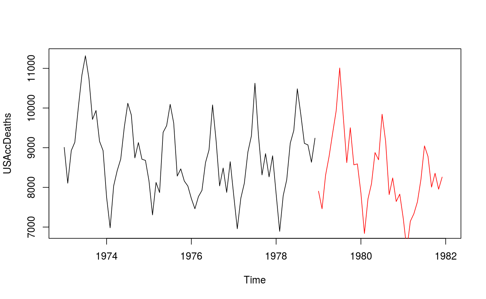

Returns a time series based on the model object object.
# S3 method for ets simulate(object, nsim = length(object$x), seed = NULL, future = TRUE, bootstrap = FALSE, innov = NULL, ...) # S3 method for Arima simulate(object, nsim = length(object$x), seed = NULL, xreg = NULL, future = TRUE, bootstrap = FALSE, innov = NULL, lambda = object$lambda, ...) # S3 method for ar simulate(object, nsim = object$n.used, seed = NULL, future = TRUE, bootstrap = FALSE, innov = NULL, ...) # S3 method for fracdiff simulate(object, nsim = object$n, seed = NULL, future = TRUE, bootstrap = FALSE, innov = NULL, ...) # S3 method for nnetar simulate(object, nsim = length(object$x), seed = NULL, xreg = NULL, future = TRUE, bootstrap = FALSE, innov = NULL, lambda = object$lambda, ...)
| object | An object of class " |
|---|---|
| nsim | Number of periods for the simulated series. Ignored if either
|
| seed | Either |
| future | Produce sample paths that are future to and conditional on the
data in |
| bootstrap | Do simulation using resampled errors rather than normally
distributed errors or errors provided as |
| innov | A vector of innovations to use as the error series. Ignored if
|
| ... | Other arguments, not currently used. |
| xreg | New values of |
| lambda | Box-Cox parameter. If not |
An object of class "ts".
With simulate.Arima(), the object should be produced by
Arima or auto.arima, rather than
arima. By default, the error series is assumed normally
distributed and generated using rnorm. If innov
is present, it is used instead. If bootstrap=TRUE and
innov=NULL, the residuals are resampled instead.
When future=TRUE, the sample paths are conditional on the data. When
future=FALSE and the model is stationary, the sample paths do not
depend on the data at all. When future=FALSE and the model is
non-stationary, the location of the sample paths is arbitrary, so they all
start at the value of the first observation.
ets, Arima, auto.arima,
ar, arfima, nnetar.
lines(simulate(fit, 36), col="red")